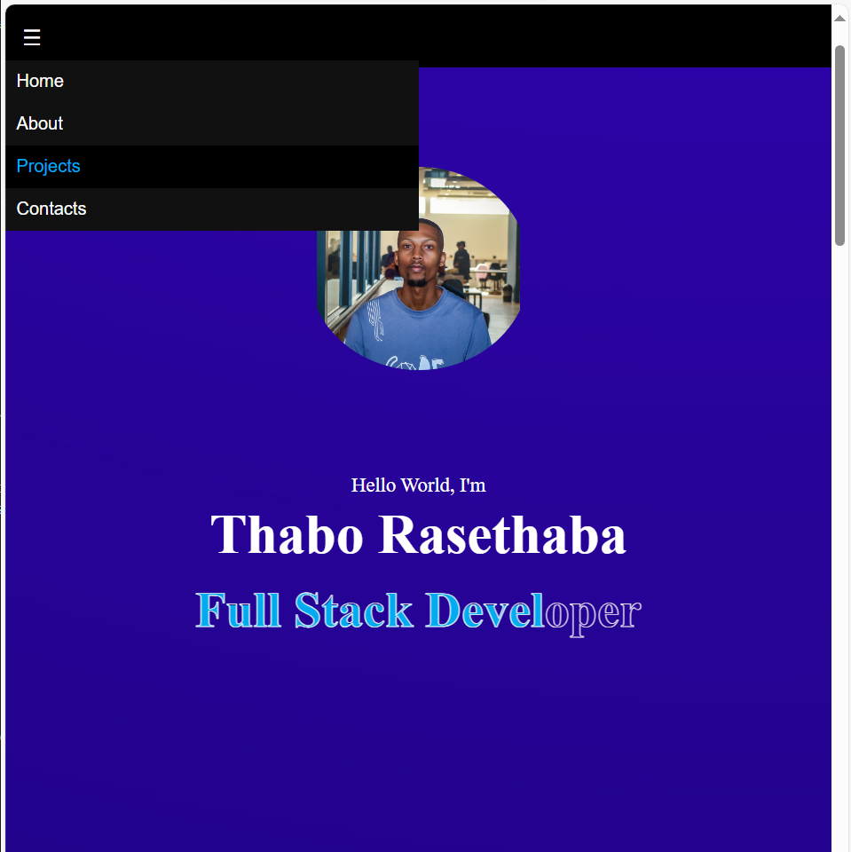
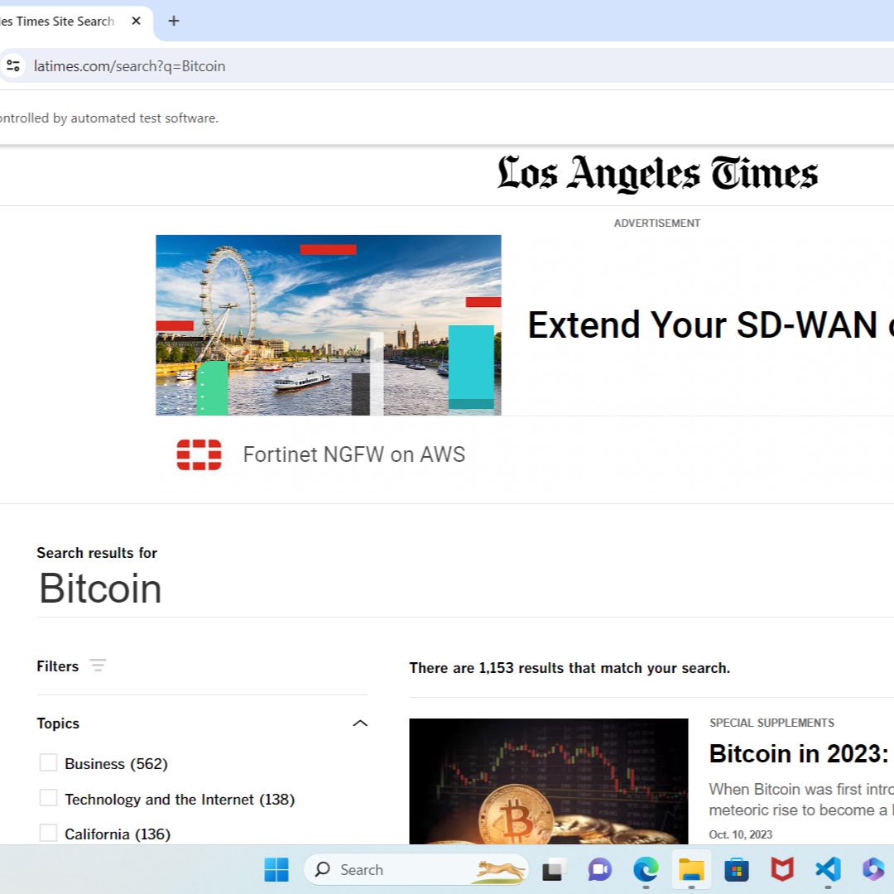
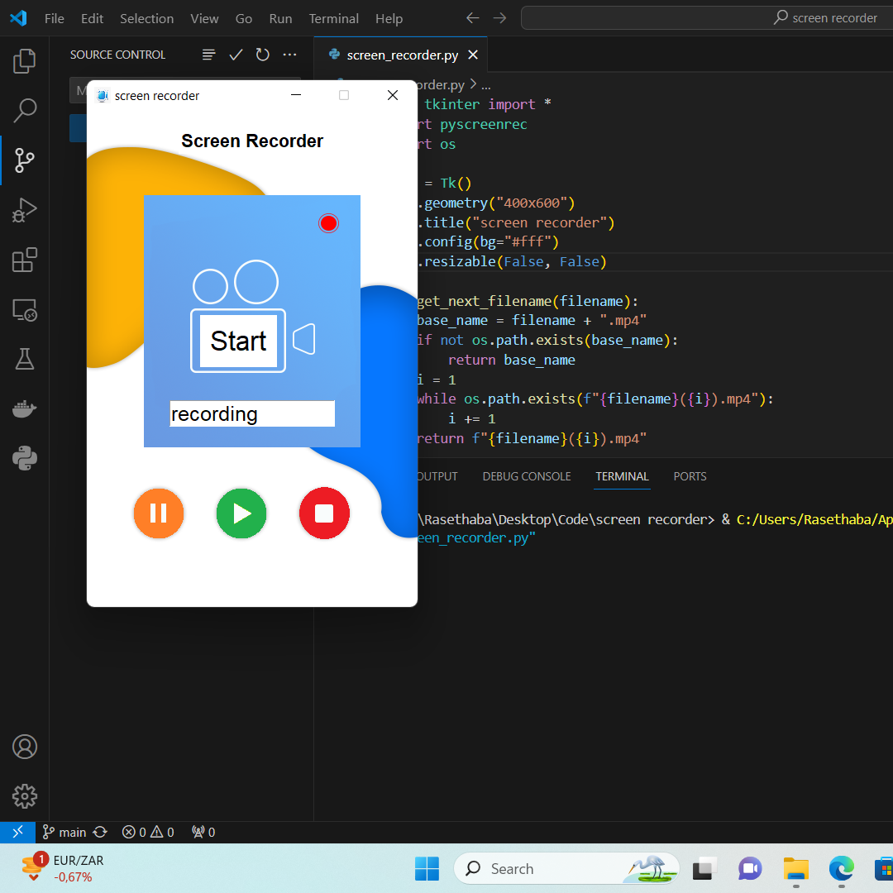
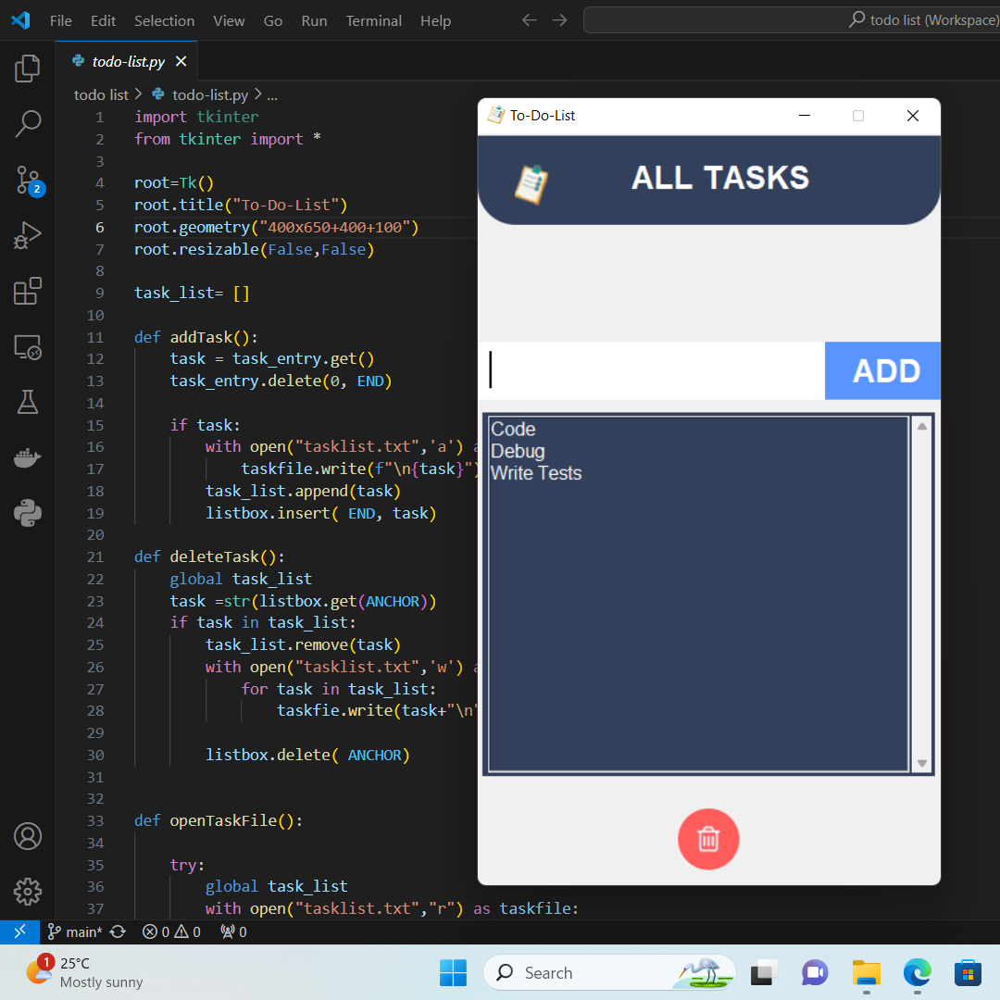

Portfolio SystemGitHub ↗
Developer Portfolio
Redesigned and rebuilt my personal portfolio into a polished developer brand with responsive layouts, strong visual hierarchy, reusable styling patterns, and recruiter-focused project presentation.
Selected work
A focused collection of product, web, automation, and application projects. Each project highlights practical implementation, interface thinking, and the ability to turn ideas into working software.
A creative digital product built around colour, visual identity, and interactive user experience. MidasChroma represents the kind of work I want to build more of: useful, visually considered software that combines product thinking, design logic, and clean implementation.

Redesigned and rebuilt my personal portfolio into a polished developer brand with responsive layouts, strong visual hierarchy, reusable styling patterns, and recruiter-focused project presentation.

Developed a browser automation workflow for interacting with a news website and reducing repetitive manual tasks. The project highlights practical RPA thinking, page navigation, and workflow automation.

Built a lightweight screen recording utility for capturing workflows, tutorials, and demonstrations. The project sharpened my understanding of tooling, user-triggered flows, and practical desktop software.

Created a task management interface focused on clarity, fast interaction, and clean front-end structure. The project demonstrates core UI thinking and simple interaction design.